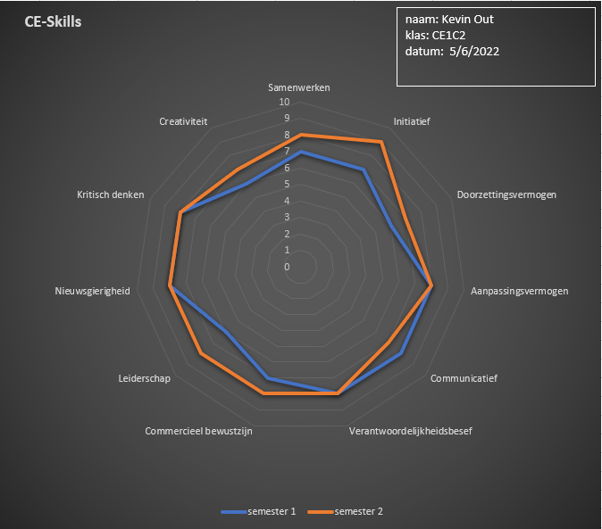

Spinneweb Blok 4

Leiderschap en initiatief nemen
De punten waar ik het meeste vooruitgang heb geboekt is leiderschap en initiatief. Dit komt gedeeltelijk omdat voor mij deze vrijwel samen gaan en beide een punt voor verbetering voor mij was. Het was een doelstelling van mij om meer initiatief te nemen zodat ik een betere leider kon zijn voor mijn projectgroep. Dit is naar mijn mening ook wel vrij goed gelukt. Ik hield een bestand bij, die nu opeens weg is, waar ik op een globale manier mijn initiativen beschreef binnen het project. Door er echt over na te denken dat ik iets moest gaan zeggen merkte ik van mezelf dat ik ook meer sprak tijdens meetings. Dit maakte het voor mij ook makkelijker om inbrengingen te doen op het gebied van leiderschap, of dit nou om een correctie ging van een groepslid of het verdelen van taken, ik kreeg het gevoel dat beide makkelijker gingen.
Achteruit gegaan op communicatie
Zoals te zien is heb ik mezelf een lager cijfer gegeven op communicatief vermogen. Dit komt niet omdat ik daadwerkelijk slechter ben geworden maar eerder omdat ik merkte dat ik mezelf in blok 1 overschat had op dit gebied. Ik merkte gedurende de blokken dat ik niet altijd alles zei wat ik wilde zeggen en te vaak momenten had waar ik in retrospectie dingen beter had kunnen doen. Vandaar heb ik ervoor gekozen dat ik mezelf een lager cijfer geef.
Tevredenheid
Over het algemeen ben ik zeker wel tevreden over mijn vooruitgang met de CE-skills. Voor mij is leiderschap 1 van de belangrijskte skills om te hebben en ben tevreden dat ik daar wat vooruitgang op heb kunnen boeken. Ook is het altijd goed om beter inzicht in jezelf en wat je kan te krijgen, dit helpt mij om de aspecten waar ik nog niet zo goed in ben te herkennen en hier ook doelmatig mee aan de slag kan gaan.
×